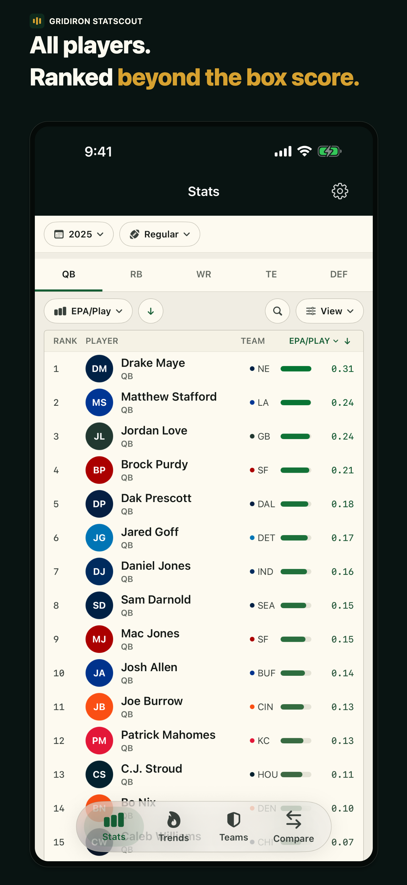
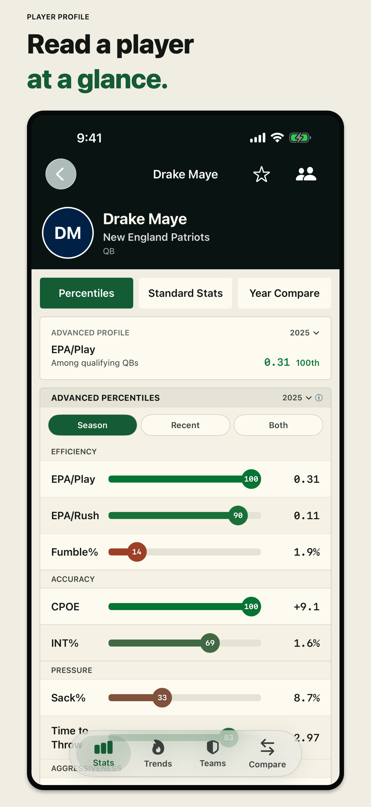
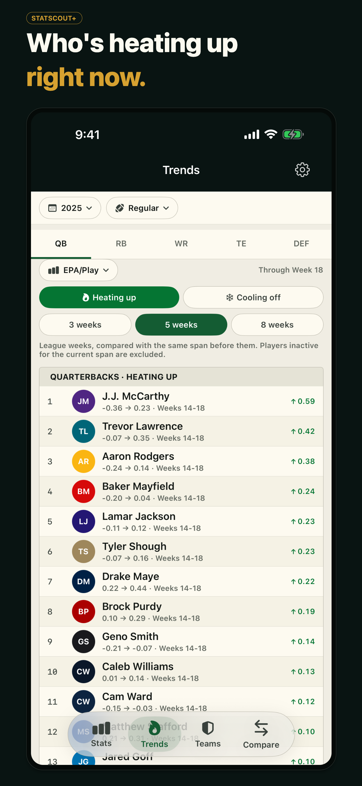
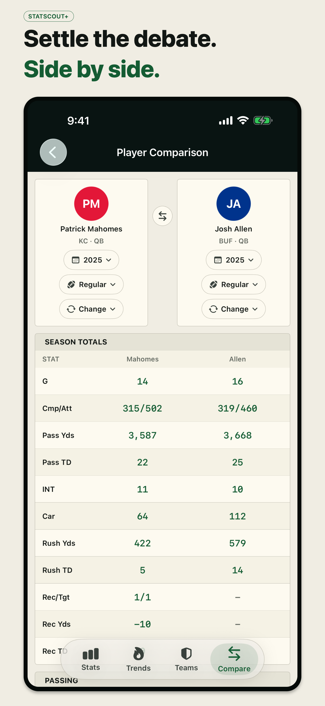
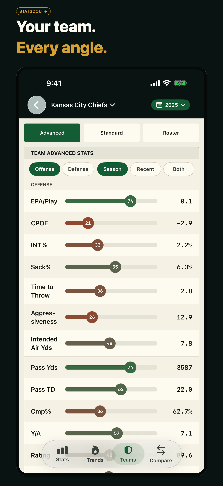
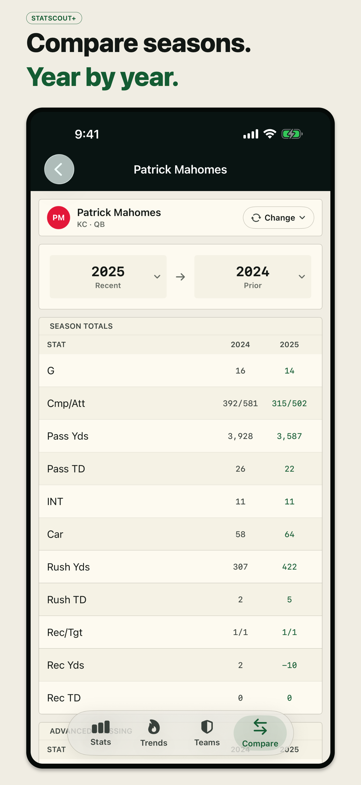

Every NFL player ranked on advanced percentiles, with the full profile one tap away and the whole league sorted by who's heating up.
iPhone · Updated nightly · No account
Download on the App Store





Leaderboards and profiles are free. StatScout+ opens the rest.
Every metric is a horizontal bar with a marker that shifts from rust at the 0th percentile through sand at the 50th to turf green at the 100th.
Passing, rushing, receiving, and defense percentiles, plus a switch to standard season stats and game-by-game form.
The full league filtered by position group, sortable on any metric, searchable across every active player.
The data feed refreshes every night, so percentiles and standard stats reflect the games just played.
The whole league ranked by who's rising and falling right now.
Narrow any player, club, or leaderboard to a recent window instead of a full season.
Any two players side by side, or one player's seasons against each other.
Advanced and standard team stats, with the same percentile treatment.
Every season since 2000, plus all-time career percentiles.
StatScout has no sign-up, no ads, and no third-party analytics. The app makes only the network requests needed to fetch NFL statistics and, if you subscribe, to verify your purchase with Apple. Your favorites and settings stay on your iPhone.
Privacy Policy →How it's built and why it matters.
Box scores tell you who got the volume. They don't tell you who was efficient, who was unlucky, or who is quietly playing better than their yardage suggests.
StatScout puts the advanced numbers (EPA per play, CPOE, YAC over expected, rushing and receiving efficiency, defensive impact) next to the familiar totals, and renders every one as a percentile you can read at a glance. Open the app, sort the league, tap a name, know where they stand.
Leaderboards, filters, and full percentile profiles are free. StatScout+ is available monthly, yearly, or as a one-time lifetime purchase, with a 7-day free trial on subscriptions. Prices are shown in the app before you buy and vary by region.
Trends. The league ranked by who is heating up and cooling off week to week.
Recent form. Last 3, 5, or 8 games applied to any player, club, or leaderboard.
Comparisons. Two players side by side, or one player's seasons against each other.
Team scouting and history. All 32 clubs, every season back to 2000, and all-time career percentiles.
| Platform | iOS 17+ |
| Language | Swift 6 with strict concurrency |
| Framework | SwiftUI · StoreKit 2 · RevenueCat |
| Data | nflverse weekly stats and Next Gen Stats, refreshed nightly |
| Storage | Hosted stats API with a bundled historical dataset |
| Accounts | None; no sign-up, no ads, no third-party tracking |
Percentiles over raw numbers. "0.14 EPA per play" means nothing to most fans. "91st percentile" means everything, so the color bar is the primary interface.
One tap to the profile. Any row in any list opens the full player page. No menus, no drill-down chains.
A nightly pipeline, not live scraping. Stats are computed once each night and served precomputed, so the app opens fast and works the same on stadium wifi.
History in the bundle. Older seasons ship inside the app, which keeps year-over-year comparisons instant and offline-friendly.
StatScout is not affiliated with, authorized, endorsed by, or sponsored by the National Football League, any NFL team, or the NFLPA. Player names, team names, and statistics are used for identification and informational purposes only.
Free on the App Store. No account required. StatScout+ optional.
Download on the App Store